🎮
Jogos integrados
Use conjuntos e modelos por jogo para acionar comandos, efeitos e eventos sem perder organização.
Transforme presentes, likes, follows, chats e eventos da live em comandos, overlays, alertas, ranks, roletas, Jarro da Live, vídeos e automações dentro de Minecraft, Grand Theft Auto V Legacy, Sons Of The Forest, Green Hell, Valheim e Only Climb.

O LivePlay junta automações, overlays e integrações de jogos em uma experiência profissional para criadores.
Use conjuntos e modelos por jogo para acionar comandos, efeitos e eventos sem perder organização.
Presentes, likes, follows, chats, shares e eventos alimentam automações e overlays em tempo real.
Links públicos para OBS e TikTok Live Studio com alertas, ranks, vídeos, Jarro da Live e efeitos visuais.
Plugins oficiais, templates, mobs, TNT, servidores e comandos completos para live interativa.
Ver comandos completos →
Eventos da live podem causar caos no jogo com bridge própria, efeitos e comandos em tempo real.
Ver comandos completos →
Integração via BepInEx para acionar canibais, mutantes, horário do jogo, cura e presets de sobrevivência.
Ver comandos completos →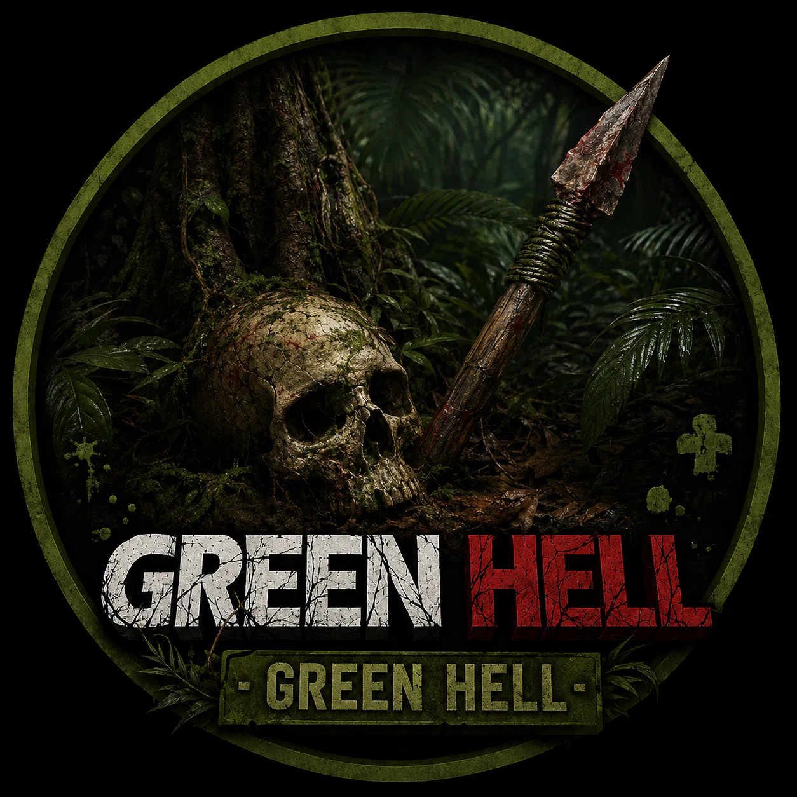
Integração via BepInEx para acionar animais, comandos de sobrevivência e eventos na selva durante a live.
Ver comandos completos →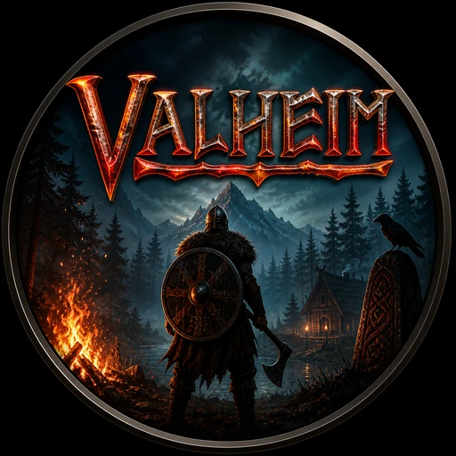
Bosses, criaturas, raids e sobrevivência em tempo real durante a live.
Ver comandos completos →Comandos de pulo, teleporte, turbo, física e trollagens para transformar a escalada em desafio interativo.
Ver comandos completos →Ranks de presentes, moedas, combos, likes e competições para manter o público participando.
Transforme presentes em progresso visual, metas, moedas, top viewers e efeitos premium.
Login, PRO/FREE, backup na nuvem, restauração e proteção para usar o LivePlay com segurança.
Clique no jogo e veja o template oficial, como ele se conecta ao LivePlay e todos os comandos disponíveis separados por categoria.
Presentes, likes, follows, shares e comandos manuais podem acionar mobs, TNT, baús, kits, armadilhas, borda, caixa de bedrock, ondas e minigames usando os plugins oficiais do LivePlay.

Template baseado no LivePlay Survival para mobs, bosses, kits, TNT, armadilhas e eventos de survival.
Template de caixa fechada com timer, preenchimento, TNT, Super TNT e prisão de vidro.
Template de borda dinâmica com expansão, redução, TNT, baús, mobs e eventos extras.
Template do minigame Treasure Arena, com mobs, aliados, armadilhas, baús e recompensas.
Template de evento por ondas com mobs nomeados pela live e progressão até a onda final.
Plugin principal de survival interativo. Ele transforma eventos da live em ajuda ou caos dentro do Minecraft: mobs, bosses, armadilhas, TNT, efeitos, baús, kits, comida, armaduras, ferramentas e metas.
/survival <ação>
/survival apple_enchanted <name> | Dá ao jogador uma maçã dourada encantada. |
/survival bow <name> | Entrega um arco com encantamento Infinidade. |
/survival random_sword <name> | Entrega uma espada aleatória com Afiação III. |
/survival totem <name> | Dá um Totem da Imortalidade ao jogador. |
/survival random_armor <name> | Entrega uma armadura aleatória com Proteção III. |
/survival tools <name> | Entrega ferramentas de netherita. |
/survival random_food <name> | Dá 10 carnes cozidas aleatórias. |
/survival enderpearls <name> | Dá 16 pérolas do End. |
/survival top | Entrega o kit TOP personalizado, com itens muito fortes. |
/survival set | Define armadura e espada padrão para o jogador. |
/survival chest | Invoca um baú com itens padrão. |
/survival chest_super | Invoca um baú com itens raros e mais poderosos. |
/survival chest-effect | Ativa ou desativa efeitos visuais no surgimento do baú. |
/survival creeper <name> | Invoca um creeper perseguindo o jogador. |
/survival creeper_charged <name> | Invoca um creeper eletrificado perseguindo o jogador. |
/survival skeleton <name> | Invoca um esqueleto perseguindo o jogador. |
/survival witch <name> | Invoca uma bruxa perseguindo o jogador. |
/survival spider <name> | Invoca uma aranha. |
/survival zombie <armor> <name> | Invoca um zumbi com a armadura escolhida perseguindo o jogador. |
/survival bee <name> | Invoca uma abelha perseguindo o jogador. |
/survival blaze <name> | Invoca um blaze perseguindo o jogador. |
/survival ravager <name> | Invoca um ravager/devastador perseguindo o jogador. |
/survival piglin <name> | Invoca um piglin perseguindo o jogador. |
/survival evoker <name> | Invoca um evocador perseguindo o jogador. |
/survival ghast <name> | Invoca um ghast perseguindo o jogador. |
/survival zombiegiant <name> | Invoca um zumbi gigante. |
/survival random_boss <name> | Invoca um chefe aleatório perseguindo o jogador. |
/survival wither | Invoca um Wither. |
/survival warden | Invoca um Warden. |
/survival dog | Invoca um cachorro amigável. |
/survival skeleton_trap | Invoca cavaleiros esqueletos. |
/survival mobs <name> | Invoca uma invasão com vários mobs aleatórios e bosses. |
/survival baby_mobs <name> | Invoca mobs bebês rápidos perto do jogador. |
/survival jockey <name> | Invoca baby zombie com espada de diamante montado em uma galinha. |
/survival armob <radius> <name> | Invoca um mob aleatório, incluindo chefes, dentro do raio informado. |
/survival rmob <radius> <name> | Invoca um mob aleatório sem chefes dentro do raio informado. |
/survival pit <width> <height> <name> | Cria um buraco embaixo do jogador. |
/survival trap <name> | Prende o jogador em uma estrutura 4x4 de teias. |
/survival kill <name> | Mata todos os jogadores do servidor. |
/survival lightning <name> | Invoca raios em todos os jogadores do servidor. |
/survival raid <name> | Invoca uma invasão completa na localização do jogador. |
/survival tntbox <name> | Cria uma caixa de TNT ao redor do jogador com creepers perseguindo. |
/survival water_drop <name> | Entrega balde de água e teleporta o jogador 200 blocos para cima. |
/survival bee_cage <name> | Cria uma gaiola de mel com abelhas ao redor do jogador. |
/survival obsidian_box <name> | Cria uma caixa de obsidiana ao redor do jogador. |
/survival stopmove <name> | Congela o movimento do jogador por 10 segundos. |
/survival lavapit <name> | Cria um poço de lava abaixo do jogador. |
/survival tnt <timer> <force> <radius> <name> | Invoca TNT perto do jogador usando tempo, força e raio. |
/survival meteors <count> <name> | Invoca meteoros na área do jogador. |
/survival speed <seconds> | Aumenta a velocidade do jogador pelo tempo informado. |
/survival jump_boost <seconds> | Aumenta a altura do salto pelo tempo informado. |
/survival strength <seconds> | Aumenta o dano de ataque pelo tempo informado. |
/survival regeneration <seconds> | Regenera a vida gradualmente pelo tempo informado. |
/survival regeneat | Cancela a perda de fome do jogador. |
/survival start <timer/zombie/sheep> <minutes/count> | Inicia uma meta do plugin, como timer, zumbis ou ovelhas. |
/survival stop | Para as metas ativas. |
/survival hidebanner | Oculta o banner que mostra o nome do presente. |
/survival clear_inventory <name> | Limpa o inventário de todos os jogadores do servidor. |
Minigame completo de caça ao tesouro. O jogador entra em uma arena no céu, encontra 3 chaves, abre o baú final, passa de fase, chega até a fase 10, derrota o Warden e retorna para a fase 1.
/tesouro <ação> ou /treasure <ação>
/tesouro create | Cria a arena do zero e inicia o minigame. Também aceita /tesouro criar. |
/tesouro criar | Alias em português para criar a Treasure Arena. |
/tesouro start | Volta para a arena sem resetar progresso. Também aceita /tesouro iniciar. |
/tesouro iniciar | Alias em português para voltar/iniciar a arena existente. |
/tesouro pause | Pausa o minigame e tira o jogador da arena sem apagar progresso. |
/tesouro pausar | Alias em português para pausar. |
/tesouro stop | Alias para pausar/parar temporariamente. |
/tesouro parar | Alias em português para parar temporariamente. |
/tesouro delete | Apaga a arena, limpa entidades, reseta progresso e volta ao mundo normal. |
/tesouro deletar | Alias em português para deletar. |
/tesouro reset | Alias para apagar e resetar a arena. |
/tesouro status | Mostra fase atual, tema, chaves, pontuação e estado do minigame. |
/tesouro setplayer <player> | Define o jogador principal/alvo dos comandos do app/RCON. |
/tesouro reload | Recarrega a configuração do plugin sem reiniciar o servidor. |
/treasure <ação> | Alias em inglês para os comandos principais do Tesouro. |
/tesouro chest {nickname} | Cria um baú comum com loot aleatório da fase atual. |
/tesouro rarechest {nickname} | Cria um baú raro com chance de loot mais forte. |
/tesouro raro {nickname} | Alias em português para rarechest. |
/tesouro cavechest {nickname} | Cria um baú extra dentro de uma caverna da arena. |
/tesouro caverna {nickname} | Alias em português para cavechest. |
/tesouro key {nickname} | Adiciona uma chave ao progresso do jogador. |
/tesouro chave {nickname} | Alias em português para key. |
/tesouro final {nickname} | Força o baú final a aparecer manualmente. |
/tesouro trap {nickname} | Ativa uma armadilha na arena. |
/tesouro armadilha {nickname} | Alias em português para trap. |
/tesouro boss {nickname} | Invoca o boss Warden. |
/tesouro chefe {nickname} | Alias em português para boss. |
/tesouro hint {nickname} | Dá uma dica de localização para ajudar a encontrar chaves/tesouros. |
/tesouro dica {nickname} | Alias em português para hint. |
/tesouro food {nickname} | Entrega comida útil ao jogador. |
/tesouro comida {nickname} | Alias em português para food. |
/tesouro diamondset {nickname} | Entrega armadura completa de diamante, espada de diamante e 5 maçãs douradas encantadas. |
/tesouro setdiamante {nickname} | Alias em português para diamondset. |
/tesouro diamanteset {nickname} | Outro alias para diamondset. |
/tesouro enchantedapple {nickname} | Dá 1 maçã dourada encantada ao jogador. |
/tesouro macaencantada {nickname} | Alias em português para enchantedapple. |
/tesouro appleencantada {nickname} | Outro alias para enchantedapple. |
/tesouro kitlendario {nickname} | Entrega kit muito forte com netherita encantada, ferramentas, escudo, arco, flechas, comida e 20 maçãs encantadas. |
/tesouro lendario {nickname} | Alias em português para kitlendario. |
/tesouro tesourotop {nickname} | Alias para kit lendário. |
/tesouro toptesouro {nickname} | Outro alias para kit lendário. |
/tesouro zombie {nickname} | Cria um zumbi na arena com nome opcional da pessoa da live. |
/tesouro skeleton {nickname} | Cria um esqueleto na arena. |
/tesouro spider {nickname} | Cria uma aranha na arena. |
/tesouro creeper {nickname} | Cria um creeper na arena. |
/tesouro witch {nickname} | Cria uma bruxa na arena. |
/tesouro ravager {nickname} | Cria um ravager na arena. |
/tesouro husk {nickname} | Cria um Husk, guardião relacionado à fase de deserto. |
/tesouro stray {nickname} | Cria um Stray, guardião relacionado à fase de gelo. |
/tesouro piglin {nickname} | Cria um Piglin e tenta impedir que vire Zombified Piglin. |
/tesouro enderman {nickname} | Cria um Enderman. |
/tesouro vindicator {nickname} | Cria um Vindicator. |
/tesouro guardian {nickname} | Cria um Guardian. |
/tesouro pillager {nickname} | Cria um Pillager. |
/tesouro wither_skeleton {nickname} | Cria um Wither Skeleton. |
/tesouro zombified_piglin {nickname} | Cria um Zombified Piglin. |
/tesouro hoglin {nickname} | Cria um Hoglin e tenta impedir que vire Zoglin. |
/tesouro shulker {nickname} | Cria um Shulker. |
/tesouro silverfish {nickname} | Cria um Silverfish. |
/tesouro golem {nickname} | Cria um Iron Golem aliado que ajuda o jogador na arena. |
/tesouro dog {nickname} | Cria um cachorro domesticado para seguir e ajudar o jogador em combate. |
/tesouro villager {nickname} | Cria um Villager amigo, usado como elemento visual/interativo. |
Estes comandos aparecem apenas para evitar confusão: não devem ser usados em modelos novos.
/tesouro elder_guardian | Removido. Não usar em modelos novos. |
/tesouro ghast | Removido. Não usar em modelos novos. |
/tesouro magma_cube | Removido. Não usar em modelos novos. |
/tesouro mob | Removido. Não usar em modelos novos. |
/tesouro warden | Removido. Para invocar o Warden, use /tesouro boss. |
Plugin de evento por ondas. O jogador precisa matar todos os mobs da onda atual para avançar. Os mobs podem receber o nome da pessoa da live usando {nickname} ou {username} e são protegidos para não queimar no sol.
/surtosolar ou /solar
/surtosolar start | Inicia o evento Surto Solar com nomes padrão nos mobs. |
/surtosolar start <nickname> | Inicia o evento com o nome da pessoa nos mobs; se já estiver ativo, adiciona reforço na onda atual. |
/surtosolar stop | Para o evento. |
/surtosolar status | Mostra player alvo, onda atual, total de ondas, mobs restantes e tempo. |
/surtosolar reload | Recarrega o config.yml. |
/surtosolar clear | Remove os mobs do Surto Solar. |
/surtosolar setplayer <player> | Define o jogador principal/alvo do evento. |
/surtosolar | Cria um mob do Surto Solar sem nome em cima. |
/surtosolar <nickname> | Cria um mob com o nome da pessoa em cima da cabeça. |
/solar | Alias curto do comando /surtosolar. |
/solar <nickname> | Alias curto para criar mob nomeado pelo viewer. |
Plugin de caixa de desafios para live. Ele cria uma caixa de Bedrock, vidro ou madeira, controla timer, preenchimento de blocos, limpeza, TNT, Super TNT, prisão de vidro, proteção e eventos interativos.
/bedrock <ação>
/bedrock create | Cria uma caixa de Bedrock e inicia o timer quando ela estiver cheia. |
/bedrock create <tamanho> <altura> | Cria uma caixa personalizada. Tamanho mínimo 3 e altura permitida de 9 a 21. |
/bedrock stop | Para o timer da caixa. |
/bedrock delete | Deleta a caixa e para o timer. |
/bedrock tp | Teleporta o jogador para o topo da caixa. |
/bedrock timer <número> | Define uma nova duração para o timer de vitória. |
/bedrock fill | Preenche a caixa com blocos. |
/bedrock fill <linhas> | Preenche a caixa por quantidade de linhas. |
/bedrock fillblock <quantidade> | Preenche uma quantidade específica de blocos na caixa. |
/bedrock clear | Limpa todos os blocos da caixa. |
/bedrock layer <quantidade> <material> | Altera o material das camadas da caixa. |
/bedrock glass | Troca paredes e chão da caixa por vidro. |
/bedrock wood | Troca paredes e chão da caixa por madeira. |
/bedrock rock | Define paredes e chão como Bedrock. |
/bedrock tnt [nome] | Invoca TNT acima da caixa com nome opcional. |
/bedrock randomtnt | Invoca TNT com força aleatória. |
/bedrock supertnt <quantidade> <força> | Invoca Super TNT usando quantidade e força informadas. |
/bedrock glass_prison <segundos> | Prende o jogador em uma prisão de vidro pelo tempo definido. |
/bedrock edit | Ativa ou desativa a proteção dos blocos da caixa. |
/bedrock autoreplace | Ativa ou desativa o preenchimento com qualquer bloco. |
/bedrock fireworks | Ativa ou desativa fogos quando a TNT explode. |
/bedrock toplock | Bloqueia ou desbloqueia o espaço acima da caixa. |
/bedrock color <cancel/win> <cor> | Altera a cor do texto de cancelamento ou vitória. |
/bedrock heightup <quantidade> | Aumenta a altura da caixa. |
/bedrock heightdown <quantidade> | Diminui a altura da caixa. |
/bedrock radiusup <quantidade> | Aumenta o raio da caixa. |
/bedrock radiusdown <quantidade> | Diminui o raio da caixa. |
/bedrock set_main_user <usuário> | Define o usuário principal da caixa. |
/bedrock remove_main_user | Remove o usuário principal. |
Plugin de borda dinâmica para live. Ele cria uma borda ao redor do jogador, permite expandir ou reduzir a área, gerar TNT, baús, proteção de spawn e eventos extras controlados pelos espectadores.
/border <ação>
/border create [tamanho] [meta] | Cria uma borda. Se não informar tamanho/meta, usa o padrão do plugin. |
/border start | Retoma ou inicia a borda pausada. |
/border stop | Pausa a borda atual. |
/border delete | Remove a borda permanentemente. |
/border info | Mostra informações da borda atual. |
/border help | Mostra a ajuda dos comandos. |
/border expand [quantidade] | Expande a borda pela quantidade informada. |
/border shrink [quantidade] | Reduz a borda pela quantidade informada. |
/border tnt [nick] [quantidade] [segundos] [força] | Gera TNT na borda/evento da borda, podendo usar nick da live. |
/border chest | Gera um baú de recompensa. |
/border addspawnprotection <raio> | Define o raio de proteção do spawn. |
/border removespawnprotection | Remove ou desativa a proteção do spawn. |
/border zombie <nickname> | Invoca zumbi com nome opcional. |
/border skeleton <nickname> | Invoca esqueleto com nome opcional. |
/border rider <nickname> | Invoca mob montado, estilo rider. |
/border pigboom <nickname> | Invoca evento explosivo com porco/TNT. |
/border tntfall <nickname> | Gera queda de TNT. |
/border sand | Gera areia caindo. |
/border kit | Entrega kit de diamante. |
/border tools | Entrega ferramentas de diamante. |
/border gapple | Entrega maçã dourada encantada. |
Quando um plugin possui versão 1.21 e 1.20.1, a descrição aparece uma vez só, porque as duas versões fazem a mesma função dentro do LivePlay. Os comandos com {nickname} ou {username} são ideais para eventos da TikTok Live, porque colocam o nome da pessoa no mob, mensagem ou ação.
Bridge próprio para transformar eventos da live em caos, veículos, polícia, NPCs, armas, clima, teleporte e efeitos visuais em tempo real.
Até 8 presets ativos no plano inicial e até 60 no plano completo.
ScriptHookVDotNet / bridge local LivePlay
96 comandos organizados em 9 categorias.
lp earthquake
Escolha o comando, vincule a um gift, like, follow, share ou chat, e o LivePlay envia a ação para o bridge do jogo.
Earthquakelp earthquake |
Terremoto com tremor de câmera, explosão fraca no chão e impulso no player. |
Meteor Showerlp meteor_shower |
Cria várias explosões próximas simulando meteoros. |
Explosion Ringlp explosion_ring |
Cria anel de explosões ao redor do player. |
Fire Chaoslp fire_chaos |
Cria fogo/explosão de molotov perto do player. |
Low Gravity Pushlp low_gravity |
Aplica impulso de gravidade baixa em player/veículos. |
Black Holelp black_hole |
Cria um efeito de buraco negro/gravidade puxando veículos e entidades próximas. |
Drunklp drunk |
Deixa o player bêbado/ragdoll por alguns segundos. |
Ragdolllp ragdoll |
Derruba o player no ragdoll. |
Launch Player Uplp launch_player |
Joga o player para cima. |
Skydivelp skydive |
Joga o player bem alto para cair de paraquedas/manual. |
Heal Playerlp heal |
Cura o player e adiciona armadura. |
Add Armorlp armor |
Coloca armadura no player. |
Kill Playerlp kill_player |
Mata o player. |
Subtract Healthlp subtract_health |
Remove parte da vida do player. |
Invinciblelp invincible |
Ativa invencibilidade temporária no player. |
Super Jumplp super_jump |
Joga o player para cima como super jump. |
1 Wanted Starlp wanted_1 |
Define 1 estrela de procurado. |
+2 Wanted Starslp wanted_2 |
Adiciona/define perseguição forte com 2 estrelas. |
3 Wanted Starslp wanted_3 |
Define 3 estrelas de procurado. |
5 Wanted Starslp wanted_5 |
Define 5 estrelas de procurado. |
Max Wantedlp max_wanted |
Define nível máximo de procurado. |
Clear Wantedlp clear_wanted |
Remove o nível de procurado. |
Never Wantedlp never_wanted |
Remove o nível de procurado. |
Spawn Random Vehiclelp spawn_random_vehicle |
Spawna um veículo padrão/aleatório controlado pelo bridge. |
Spawn Adderlp spawn_adder |
Spawna um Adder. |
Spawn Sultanlp spawn_sultan |
Spawna um Sultan. |
Spawn Rhinolp spawn_rhino |
Spawna um tanque Rhino. |
Spawn BMXlp spawn_bmx |
Spawna uma BMX. |
Spawn Faggiolp spawn_faggio |
Spawna uma Faggio. |
Spawn Buzzardlp spawn_buzzard |
Spawna um helicóptero Buzzard. |
Spawn Buslp spawn_bus |
Spawna um ônibus. |
Spawn Blimplp spawn_blimp |
Spawna um Blimp. |
Spawn Dumplp spawn_dump |
Spawna um caminhão Dump. |
Spawn Monster Trucklp spawn_monster |
Spawna um Monster Truck. |
Spawn Cargo Planelp spawn_cargo_plane |
Spawna um Cargo Plane. |
Spawn Boatlp spawn_boat |
Spawna um barco. |
Repair Current Vehiclelp repair_current_vehicle |
Repara o veículo atual. |
Boost Current Vehiclelp boost_vehicle |
Dá impulso no veículo atual. |
Flip Current Vehiclelp flip_vehicle |
Desvira o veículo atual. |
Break Vehicle Enginelp break_vehicle_engine |
Quebra/desliga o motor do veículo atual. |
Delete Player Vehiclelp delete_player_vehicle |
Remove o veículo atual do player. |
Explode Current Vehiclelp explode_current_vehicle |
Explode o veículo atual ou cria explosão próxima. |
Pop Vehicle Tireslp pop_vehicle_tires |
Fura os pneus do veículo atual. |
Launch Nearby Vehicles Uplp launch_nearby_vehicles |
Lança veículos próximos para cima. |
Flip Nearby Vehicleslp flip_nearby_vehicles |
Vira veículos próximos. |
Random Vehicle Complete Tuninglp random_vehicle_complete_tuning |
Aplica uma tunagem completa aleatória no veículo atual. |
Random Vehicle Part Tuninglp random_vehicle_part_tuning |
Altera uma peça/tunagem aleatória do veículo atual. |
Need For Speedlp need_for_speed |
Aumenta a velocidade/boost do veículo para um efeito de corrida. |
Invisible Vehicleslp invisible_vehicles |
Deixa os veículos próximos invisíveis por 12 segundos e depois volta ao normal. |
Explosive Zombieslp explosive_zombies |
Invasão temporária de zumbis explosivos que perseguem o player. |
Spawn Attackerslp spawn_attackers |
Spawna inimigos perto do player. |
Spawn Armed Attackerslp spawn_armed_attackers |
Spawna inimigos armados perto do player. |
Spawn Angry Coplp spawn_angry_cop |
Spawna policiais agressivos. |
Spawn Extreme Angry Coplp spawn_extreme_angry_cop |
Spawna policiais/SWAT agressivos. |
Spawn Moto Copslp spawn_moto_cops |
Spawna policiais em motos. |
Spawn Moto Banditslp spawn_moto_bandits |
Spawna bandidos em motos. |
Spawn Angry Alienlp spawn_angry_alien |
Spawna alien agressivo. |
Spawn Killer Clownlp spawn_clown |
Spawna palhaços/inimigos. |
Spawn Angry Chimplp spawn_monkey |
Spawna chimpanzés agressivos. |
Spawn Rifle Chimplp spawn_rifle_chimp |
Spawna um chimpanzé armado com rifle. |
Spawn Poodlelp spawn_poodle |
Spawna poodles. |
Spawn Single Armed Attackerlp spawn_single_armed_attacker |
Spawna apenas um NPC armado agressivo. |
Give RPGlp give_rpg |
Dá RPG ao player. |
Give Sniper Riflelp give_sniper |
Dá sniper ao player. |
Give Minigunlp give_minigun |
Dá minigun ao player. |
Give Railgunlp give_railgun |
Dá railgun ao player. |
Give Shotgunlp give_shotgun |
Dá shotgun ao player. |
Give Carbine Riflelp give_carbine |
Dá carbine rifle ao player. |
Give Random Weaponlp give_random_weapon |
Dá uma arma forte ao player. |
Remove Player Weaponslp remove_weapons |
Remove todas as armas do player. |
Give Nearby Peds RPGlp give_everyone_rpg |
Dá RPG para NPCs próximos e faz atacar. |
Give Nearby Peds Minigunlp give_everyone_minigun |
Dá arma pesada para NPCs próximos e faz atacar. |
Extra Sunny Weatherlp extra_sunny_weather |
Define clima extra ensolarado. |
Stormy Weatherlp stormy_weather |
Define tempestade. |
Rainy Weatherlp rainy_weather |
Define chuva. |
Foggy Weatherlp foggy_weather |
Define neblina. |
Snowy Weatherlp snowy_weather |
Define neve. |
Neutral Weatherlp neutral_weather |
Define clima limpo. |
Set Time To Morninglp set_time_morning |
Define horário de manhã. |
Set Time To Daytimelp set_time_daytime |
Define horário de dia. |
Set Time To Eveninglp set_time_evening |
Define horário de tarde/noite. |
Set Time To Nightlp set_time_night |
Define horário de noite. |
Blackout Onlp blackout_on |
Ativa blackout. |
Blackout Offlp blackout_off |
Desativa blackout. |
Teleport Uplp teleport_up |
Teleporta o player para cima. |
Teleport Forwardlp teleport_forward |
Teleporta o player para frente. |
Teleport To Random Locationlp teleport_random_location |
Teleporta para local aleatório próximo. |
Teleport To LS Airportlp teleport_ls_airport |
Teleporta para o aeroporto de LS. |
Teleport To Maze Bank Towerlp teleport_maze_bank |
Teleporta para o topo do Maze Bank. |
Teleport To Fort Zancudolp teleport_fort_zancudo |
Teleporta para Fort Zancudo. |
Teleport To Mount Chiliadlp teleport_mount_chiliad |
Teleporta para Mount Chiliad. |
No Radarlp no_radar |
Oculta radar/HUD parcial. |
No HUDlp no_hud |
Oculta HUD/radar parcial. |
Night Visionlp night_vision |
Ativa visão noturna. |
Heat Visionlp heat_vision |
Ativa visão térmica. |
Shake Cameralp shake_camera |
Treme a câmera. |
Integração via bridge BepInEx para invocar canibais, mutantes, itens, armas, munições, alterar tempo, curar e criar eventos de sobrevivência.
Até 8 presets ativos no plano inicial e até 60 no plano completo.
BepInEx IL2CPP / bridge local LivePlay
72 comandos organizados em 9 categorias.
sotf:addcharacter cannibal
Escolha o comando, vincule a um gift, like, follow, share ou chat, e o LivePlay envia a ação para o bridge do jogo.
Bone Club Cannibalsotf:addcharacter cannibal |
Invoca Bone Club Cannibal perto do jogador. |
Brute Cannibalspawn_heavy |
Invoca Brute Cannibal perto do jogador. |
Dirty Cannibalsotf:addcharacter cannibal |
Invoca Dirty Cannibal perto do jogador. |
Effigy Armor Cannibalsotf:addcharacter cannibal |
Invoca Effigy Armor Cannibal perto do jogador. |
Gold Mask Cannibalsotf:addcharacter cannibal |
Invoca Gold Mask Cannibal perto do jogador. |
Masked Cannibalsotf:addcharacter cannibal |
Invoca Masked Cannibal perto do jogador. |
Muddy Cannibalsotf:addcharacter muddy |
Invoca Muddy Cannibal perto do jogador. |
Regular Cannibalspawn_cannibal |
Invoca Regular Cannibal perto do jogador. |
Titan Cannibalsotf:addcharacter fat |
Invoca Titan Cannibal perto do jogador. |
Torch Cannibalsotf:addcharacter cannibal |
Invoca Torch Cannibal perto do jogador. |
Armsy Mutantsotf:addcharacter armsy |
Invoca Armsy Mutant perto do jogador. |
Blind Mutant Facelesssotf:addcharacter mrpuffy |
Invoca Blind Mutant Faceless perto do jogador. |
Caterpillar Mutantsotf:addcharacter john2 |
Invoca Caterpillar Mutant perto do jogador. |
Creepy Virginia Mutantsotf:addcharacter creepyvirginia |
Invoca Creepy Virginia Mutant perto do jogador. |
Demon Mutantspawn_demon |
Invoca Demon Mutant perto do jogador. |
Demon Bosssotf:addcharacter demonboss 1 |
Invoca Demon Boss perto do jogador. |
Fingers Mutantspawn_mutant |
Invoca Fingers Mutant perto do jogador. |
Holey Mutantsotf:addcharacter holey |
Invoca Holey Mutant perto do jogador. |
Legsy Mutantsotf:addcharacter legsy |
Invoca Legsy Mutant perto do jogador. |
Mutant Babyspawn_baby |
Invoca Mutant Baby perto do jogador. |
Sluggy The Blob Mutantsotf:addcharacter sluggy |
Invoca Sluggy The Blob Mutant perto do jogador. |
Twins Mutantspawn_twins |
Invoca Twins Mutant perto do jogador. |
Duct Tapesotf:additem 419 |
Adiciona Duct Tape ao inventário. |
Flasksotf:additem 426 |
Adiciona Flask ao inventário. |
Lightersotf:additem 413 |
Adiciona Lighter ao inventário. |
Meds First Aid Pouchsotf:additem 437 |
Adiciona Meds First Aid Pouch ao inventário. |
Ropesotf:additem 403 |
Adiciona Rope ao inventário. |
Tarpsotf:additem 504 |
Adiciona Tarp ao inventário. |
Air Tanksotf:additem 469 |
Adiciona Air Tank ao inventário. |
Binocularssotf:additem 341 |
Adiciona Binoculars ao inventário. |
Can Openersotf:additem 432 |
Adiciona Can Opener ao inventário. |
Flashlightsotf:additem 471 |
Adiciona Flashlight ao inventário. |
GPS Locatorsotf:additem 529 |
Adiciona GPS Locator ao inventário. |
GPS Trackersotf:additem 412 |
Adiciona GPS Tracker ao inventário. |
Night Vision Gogglessotf:additem 354 |
Adiciona Night Vision Goggles ao inventário. |
Rebreathersotf:additem 444 |
Adiciona Rebreather ao inventário. |
Repair Toolsotf:additem 422 |
Adiciona Repair Tool ao inventário. |
Rope Gunsotf:additem 522 |
Adiciona Rope Gun ao inventário. |
Shovelsotf:additem 485 |
Adiciona Shovel ao inventário. |
Walkie Talkiesotf:additem 486 |
Adiciona Walkie Talkie ao inventário. |
Wristwatchsotf:additem 410 |
Adiciona Wristwatch ao inventário. |
Crafted Clubsotf:additem 477 |
Adiciona Crafted Club ao inventário. |
Crafted Spearsotf:additem 474 |
Adiciona Crafted Spear ao inventário. |
Electric Chainsawsotf:additem 394 |
Adiciona Electric Chainsaw ao inventário. |
Firefighter Axesotf:additem 431 |
Adiciona Firefighter Axe ao inventário. |
Guitarsotf:additem 340 |
Adiciona Guitar ao inventário. |
Katanasotf:additem 367 |
Adiciona Katana ao inventário. |
Machetesotf:additem 359 |
Adiciona Machete ao inventário. |
Modern Axesotf:additem 356 |
Adiciona Modern Axe ao inventário. |
Puttersotf:additem 525 |
Adiciona Putter ao inventário. |
Stun Batonsotf:additem 396 |
Adiciona Stun Baton ao inventário. |
Tactical Axesotf:additem 379 |
Adiciona Tactical Axe ao inventário. |
Utility Knifesotf:additem 380 |
Adiciona Utility Knife ao inventário. |
Compound Bowsotf:additem 360 |
Adiciona Compound Bow ao inventário. |
Crafted Bowsotf:additem 443 |
Adiciona Crafted Bow ao inventário. |
Crossbowsotf:additem 365 |
Adiciona Crossbow ao inventário. |
Pistolsotf:additem 355 |
Adiciona Pistol ao inventário. |
Revolversotf:additem 386 |
Adiciona Revolver ao inventário. |
Riflesotf:additem 361 |
Adiciona Rifle ao inventário. |
Shotgunsotf:additem 358 |
Adiciona Shotgun ao inventário. |
Stun Gunsotf:additem 353 |
Adiciona Stun Gun ao inventário. |
Munição Pistola 9mmsotf:addammo 362 10 |
Adiciona munição 9mm para a pistola. |
Munição Buckshotsotf:addammo 364 10 |
Adiciona munição buckshot da shotgun. |
Munição Revolver 9mmsotf:addammo 362 10 |
Adiciona munição 9mm para o revólver. O revólver usa a mesma munição 9mm da pistola. |
Munição Riflesotf:addammo 387 10 |
Adiciona munição de rifle. |
Virotes de Bestasotf:addammo 368 10 |
Adiciona virotes de besta. |
Flechas Artesanaissotf:addammo 507 10 |
Adiciona flechas artesanais. |
Munição Stun Gunsotf:addammo 369 10 |
Adiciona munição do stun gun. |
Munição Slugsotf:addammo 363 10 |
Adiciona munição slug da shotgun. |
Virar Diaset_time_day |
Muda o horário do jogo para dia. |
Virar Noiteset_time_night |
Muda o horário do jogo para noite. |
Curar Playerheal_player |
Regenera a vida do jogador. |
Bridge BepInEx para eventos de selva: status negativos, dano, ameaças, animais, comida, medicina, ferramentas, armas e comandos de debug.
Até 8 presets ativos no plano inicial e até 60 no plano completo.
BepInEx / bridge local LivePlay
33 comandos organizados em 8 categorias.
gh:damage_player
Escolha o comando, vincule a um gift, like, follow, share ou chat, e o LivePlay envia a ação para o bridge do jogo.
Dar Danogh:damage_player |
Tenta causar dano leve ao jogador. |
Aplicar Venenogh:poison_player |
Tenta aplicar efeito de veneno/status negativo. |
Aplicar Febregh:fever_player |
Tenta aplicar febre/status negativo. |
Spawn Cobragh:spawn_snake |
Envia o comando real spawn_snake para o bridge. |
Spawn Jaguargh:spawn_jaguar |
Envia o comando real spawn_jaguar para o bridge. |
Spawn Armadillogh:spawn_armadillo |
Tenta invocar Armadillo usando correspondência estrita de prefab/entidade do Green Hell. |
Spawn Capybaragh:spawn_capybara |
Tenta invocar Capybara usando correspondência estrita de prefab/entidade do Green Hell. |
Spawn Pumagh:spawn_puma |
Tenta invocar Puma usando correspondência estrita de prefab/entidade do Green Hell. |
Spawn Tortoisegh:spawn_tortoise |
Tenta invocar Tortoise usando correspondência estrita de prefab/entidade do Green Hell. |
Debug Spawn/Animaisgh:debug_greenhell_spawn_help |
Gera no LogOutput.log uma varredura de comandos, métodos e candidatos relacionados a spawn para investigar o spawner real do Green Hell. |
Give Bananagh:give_banana |
Tenta entregar Banana ao jogador; se não houver API de inventário compatível, tenta dropar o item exatamente identificado no jogador. |
Give Coconutgh:give_coconut |
Tenta entregar Coconut ao jogador; se não houver API de inventário compatível, tenta dropar o item exatamente identificado no jogador. |
Give Antsgh:give_ants |
Tenta entregar Ants ao jogador por inventário/drop estrito. |
Give Ash Dressinggh:give_ash_dressing |
Tenta entregar Ash Dressing ao jogador por inventário/drop estrito. |
Give Goliath Dressinggh:give_goliath_dressing |
Tenta entregar Goliath Dressing ao jogador por inventário/drop estrito. |
Give Honey Dressinggh:give_honey_dressing |
Tenta entregar Honey Dressing ao jogador por inventário/drop estrito. |
Give Leaf Bandagegh:give_leaf_bandage |
Tenta entregar Leaf Bandage ao jogador por inventário/drop estrito. |
Give Lily Dressinggh:give_lily_dressing |
Tenta entregar Lily Dressing ao jogador por inventário/drop estrito. |
Give Painkillersgh:give_painkillers |
Tenta entregar Painkillers ao jogador por inventário/drop estrito. |
Give Arrowgh:give_arrow |
Tenta entregar Arrow ao jogador por inventário/drop estrito. |
Give Axegh:give_axe |
Tenta entregar Axe ao jogador por inventário/drop estrito. |
Give Blade Axegh:give_blade_axe |
Tenta entregar Blade Axe ao jogador por inventário/drop estrito. |
Give Bone Axegh:give_bone_axe |
Tenta entregar Bone Axe ao jogador por inventário/drop estrito. |
Give Bowgh:give_bow |
Tenta entregar Bow ao jogador por inventário/drop estrito. |
Give Obsidian Axegh:give_obsidian_axe |
Tenta entregar Obsidian Axe ao jogador por inventário/drop estrito. |
Give Pickaxegh:give_pickaxe |
Tenta entregar Pickaxe ao jogador por inventário/drop estrito. |
Give Speargh:give_spear |
Tenta entregar Spear ao jogador por inventário/drop estrito. |
Give Stone Axegh:give_stone_axe |
Tenta entregar Stone Axe ao jogador por inventário/drop estrito. |
Give Stone Knifegh:give_stone_knife |
Tenta entregar Stone Knife ao jogador por inventário/drop estrito. |
Give Stone Spear Altgh:give_stone_spear_alt |
Tenta entregar Stone Spear Alt ao jogador por inventário/drop estrito. |
Give Stone Speargh:give_stone_spear |
Tenta entregar Stone Spear ao jogador por inventário/drop estrito. |
Give Torchgh:give_torch |
Tenta entregar Torch ao jogador por inventário/drop estrito. |
Give Wooden Clubgh:give_wooden_club |
Tenta entregar Wooden Club ao jogador por inventário/drop estrito. |
Template oficial para invocar bosses, criaturas, inimigos, aliados, itens, armas, armaduras, comida, poções, clima e tempo no Valheim.
Até 10 presets ativos no plano inicial e até 60 no plano completo.
BepInEx / bridge local LivePlay
128 comandos organizados em 21 categorias.
vh:spawn_eikthyr
Escolha o comando, vincule a um gift, like, follow, share ou chat, e o LivePlay envia a ação para o bridge do jogo.
Spawn Eikthyrvh:spawn_eikthyr |
Invoca o boss Eikthyr. |
Spawn The Eldervh:spawn_elder |
Invoca o boss The Elder. |
Spawn Bonemassvh:spawn_bonemass |
Invoca o boss Bonemass. |
Spawn Modervh:spawn_moder |
Invoca o boss Moder. |
Spawn Yagluthvh:spawn_yagluth |
Invoca o boss Yagluth. |
Spawn Seeker Queenvh:spawn_seeker_queen |
Invoca a Seeker Queen. |
Spawn Fadervh:spawn_fader |
Invoca o boss Fader. |
Spawn Boarvh:spawn_boar |
Invoca javalis. |
Spawn Boar Piggyvh:spawn_boar_piggy |
Invoca filhotes de javali. |
Spawn Wolfvh:spawn_wolf |
Invoca lobos. |
Spawn Wolf Cubvh:spawn_wolf_cub |
Invoca filhotes de lobo. |
Spawn Loxvh:spawn_lox |
Invoca Lox. |
Spawn Lox Calfvh:spawn_lox_calf |
Invoca filhote de Lox. |
Spawn Chickenvh:spawn_chicken |
Invoca galinhas. |
Spawn Henvh:spawn_hen |
Invoca galinhas adultas. |
Spawn Asksvinvh:spawn_asksvin |
Invoca Asksvin. |
Spawn Asksvin Hatchlingvh:spawn_asksvin_hatchling |
Invoca filhote de Asksvin. |
Spawn Deervh:spawn_deer |
Invoca cervos. |
Spawn Harevh:spawn_hare |
Invoca lebres. |
Spawn Neckvh:spawn_neck |
Invoca Necks. |
Spawn Greylingvh:spawn_greyling |
Invoca Greylings. |
Spawn Greydwarfvh:spawn_greydwarf |
Invoca Greydwarfs. |
Spawn Skeletonvh:spawn_skeleton |
Invoca esqueletos. |
Spawn Dvergervh:spawn_dverger |
Invoca um Dverger. |
Spawn Dverger Magevh:spawn_dverger_mage |
Invoca um Dverger Mage. |
Spawn Dverger Mage Firevh:spawn_dverger_mage_fire |
Invoca um Dverger Mage Fire. |
Spawn Dverger Mage Icevh:spawn_dverger_mage_ice |
Invoca um Dverger Mage Ice. |
Spawn Dverger Mage Supportvh:spawn_dverger_mage_support |
Invoca um Dverger Mage Support. |
Spawn Troll Amigovh:spawn_troll_friendly |
Invoca um Troll amigo perto do jogador. |
Spawn Skeleton Friendlyvh:spawn_skeleton_friendly |
Invoca Skeleton Friendly. |
Spawn Greydwarf Elitevh:spawn_greydwarf_elite |
Invoca Greydwarf Elite. |
Spawn Greydwarf Shamanvh:spawn_greydwarf_shaman |
Invoca Greydwarf Shaman. |
Spawn Blobvh:spawn_blob |
Invoca Blobs. |
Spawn Blob Elitevh:spawn_blob_elite |
Invoca Blob Elite. |
Spawn Draugrvh:spawn_draugr |
Invoca Draugr. |
Spawn Draugr Elitevh:spawn_draugr_elite |
Invoca Draugr Elite. |
Spawn Draugr Rangedvh:spawn_draugr_ranged |
Invoca Draugr Ranged. |
Spawn Leechvh:spawn_leech |
Invoca Leeches. |
Spawn Leech Cavevh:spawn_leech_cave |
Invoca Leech cave. |
Spawn Surtlingvh:spawn_surtling |
Invoca Surtlings. |
Spawn Batvh:spawn_bat |
Invoca morcegos. |
Spawn Drakevh:spawn_drake |
Invoca Drakes/Hatchlings. |
Spawn Trollvh:spawn_troll |
Invoca um Troll. |
Spawn Skeleton Poisonvh:spawn_skeleton_poison |
Invoca esqueleto venenoso. |
Spawn Abominationvh:spawn_abomination |
Invoca Abomination. |
Spawn Wraithvh:spawn_wraith |
Invoca Wraith. |
Spawn Fenringvh:spawn_fenring |
Invoca Fenring. |
Spawn Fenring Cultistvh:spawn_fenring_cultist |
Invoca Fenring Cultist. |
Spawn Stone Golemvh:spawn_stone_golem |
Invoca Stone Golem. |
Spawn Ulvvh:spawn_ulv |
Invoca Ulv. |
Spawn Deathsquitovh:spawn_deathsquito |
Invoca Deathsquito. |
Spawn Fulingvh:spawn_fuling |
Invoca Fulings/Goblin. |
Spawn Fuling Berserkervh:spawn_fuling_berserker |
Invoca Fuling Berserker. |
Spawn Fuling Shamanvh:spawn_fuling_shaman |
Invoca Fuling Shaman. |
Spawn Serpentvh:spawn_serpent |
Invoca Serpent. |
Spawn Gjallvh:spawn_gjall |
Invoca Gjall. |
Spawn Seekervh:spawn_seeker |
Invoca Seekers. |
Spawn Seeker Broodvh:spawn_seeker_brood |
Invoca Seeker Brood. |
Spawn Seeker Brutevh:spawn_seeker_brute |
Invoca Seeker Brute. |
Spawn Tickvh:spawn_tick |
Invoca Ticks. |
Spawn Bonemawvh:spawn_bonemaw |
Invoca Bonemaw. |
Spawn Charred Marksmanvh:spawn_charred_archer |
Invoca Charred Marksman. |
Spawn Charred Warlockvh:spawn_charred_mage |
Invoca Charred Warlock. |
Spawn Charred Warriorvh:spawn_charred_melee |
Invoca Charred Warrior. |
Spawn Charred Twitchervh:spawn_charred_twitcher |
Invoca Charred Twitcher. |
Spawn Fallen Valkyrievh:spawn_fallen_valkyrie |
Invoca Fallen Valkyrie. |
Spawn Morgen NonSleepingvh:spawn_morgen_awake |
Invoca Morgen acordado. |
Spawn Volturevh:spawn_volture |
Invoca Volture. |
Heal Playervh:heal_player |
Tenta curar o jogador local. |
Stormvh:weather_storm |
Tenta alterar o clima para tempestade via console. |
Clear Enemiesvh:clear_enemies |
Tenta remover inimigos próximos. |
Limpar Inventáriovh:clear_inventory |
Remove todos os itens do inventário do jogador. |
Give Hammervh:give_hammer |
Entrega martelo. |
Give Hoevh:give_hoe |
Entrega hoe/enxada. |
Give Cultivatorvh:give_cultivator |
Entrega cultivador. |
Give Iron Pickaxevh:give_pickaxe_iron |
Entrega picareta de ferro. |
Give Iron Axevh:give_axe_iron |
Entrega machado de ferro. |
Give Fishing Rodvh:give_fishing_rod |
Entrega vara de pesca. |
Give Iron Macevh:give_iron_mace |
Entrega maça de ferro. |
Give Frostnervh:give_frostner |
Entrega Frostner. |
Give Iron Swordvh:give_iron_sword |
Entrega espada de ferro. |
Give Blackmetal Swordvh:give_blackmetal_sword |
Entrega espada de blackmetal. |
Give Mistwalkervh:give_mistwalker |
Entrega Mistwalker. |
Give Draugr Fangvh:give_draugr_fang |
Entrega arco Draugr Fang. |
Give Spine Snapvh:give_spinesnap |
Entrega arco Spine Snap. |
Give Arbalestvh:give_arbalest |
Entrega besta Arbalest. |
Give Fire Arrowsvh:give_arrow_fire |
Entrega flechas de fogo. |
Give Poison Arrowsvh:give_arrow_poison |
Entrega flechas de veneno. |
Give Frost Arrowsvh:give_arrow_frost |
Entrega flechas de gelo. |
Give Needle Arrowsvh:give_arrow_needle |
Entrega flechas de agulha. |
Give Blackmetal Boltsvh:give_bolt_blackmetal |
Entrega bolts de blackmetal. |
Give Serpent Shieldvh:give_serpent_shield |
Entrega escudo de serpente. |
Give Blackmetal Shieldvh:give_blackmetal_shield |
Entrega escudo de blackmetal. |
Give Carapace Shieldvh:give_carapace_shield |
Entrega escudo de carapaça. |
Give Root Chestvh:give_root_chest |
Entrega peitoral Root. |
Give Root Legsvh:give_root_legs |
Entrega pernas Root. |
Give Root Maskvh:give_root_mask |
Entrega máscara Root. |
Give Wolf Chestvh:give_wolf_chest |
Entrega peitoral de lobo. |
Give Wolf Legsvh:give_wolf_legs |
Entrega pernas de lobo. |
Give Drake Helmetvh:give_drake_helmet |
Entrega capacete Drake. |
Give Padded Chestvh:give_padded_chest |
Entrega peitoral padded. |
Give Padded Legsvh:give_padded_legs |
Entrega pernas padded. |
Give Padded Helmetvh:give_padded_helmet |
Entrega capacete padded. |
Give Carapace Chestvh:give_carapace_chest |
Entrega peitoral carapace. |
Give Carapace Legsvh:give_carapace_legs |
Entrega pernas carapace. |
Give Carapace Helmetvh:give_carapace_helmet |
Entrega capacete carapace. |
Give Feather Capevh:give_feather_cape |
Entrega capa de penas. |
Give Wolf Capevh:give_wolf_cape |
Entrega capa de lobo. |
Give Honeyvh:give_honey |
Entrega mel. |
Give Sausagesvh:give_sausages |
Entrega sausages. |
Give Serpent Stewvh:give_serpent_stew |
Entrega Serpent Stew. |
Give Lox Pievh:give_lox_pie |
Entrega Lox Pie. |
Give Blood Puddingvh:give_blood_pudding |
Entrega Blood Pudding. |
Give Fish Wrapsvh:give_fish_wraps |
Entrega Fish Wraps. |
Give Saladvh:give_salad |
Entrega Salad. |
Give Misthare Supremevh:give_misthare_supreme |
Entrega Misthare Supreme. |
Give Honey Glazed Chickenvh:give_honey_glazed_chicken |
Entrega Honey Glazed Chicken. |
Give Seeker Aspicvh:give_seeker_aspic |
Entrega Seeker Aspic. |
Give Yggdrasil Porridgevh:give_yggdrasil_porridge |
Entrega Yggdrasil Porridge. |
Give Medium Healing Meadvh:give_mead_health_medium |
Entrega cura média. |
Give Medium Stamina Meadvh:give_mead_stamina_medium |
Entrega stamina média. |
Give Poison Resist Meadvh:give_mead_poison_resist |
Entrega resistência a veneno. |
Give Frost Resist Meadvh:give_mead_frost_resist |
Entrega resistência a gelo. |
Give Fire Resist Meadvh:give_mead_fire_resist |
Entrega resistência a fogo. |
Give Medium Eitr Meadvh:give_mead_eitr_medium |
Entrega eitr médio. |
Spawn Tronco Grandevh:spawn_big_tree_log |
Spawna um tronco grande e grosso de árvore perto do jogador. |
Deixar de Diavh:time_day |
Tenta deixar o Valheim de dia. |
Deixar de Noitevh:time_night |
Tenta deixar o Valheim de noite. |
Template focado em criar momentos virais durante a escalada: viewers podem ajudar, atrapalhar, empurrar, teleportar, girar a câmera, aplicar vento, deixar o player gigante ou dificultar o pulo.
Até 6 presets ativos no plano inicial e até 60 no plano completo.
UE4SS com fila local LivePlay e heartbeat do mod.
29 comandos organizados em 7 categorias.
oc:jump_boost 8
Escolha o comando, vincule a um gift, like, follow, share ou chat, e o LivePlay envia a ação para o mod local do Only Climb.
Pulo Forteoc:jump_boost 8 |
Impulso único para cima. |
Puxar para Baixooc:launch_down 8 |
Aplica força para baixo. |
Lançar para Frenteoc:launch_forward 8 |
Arremessa o jogador para frente e para cima. |
Lançar para Trásoc:launch_back 8 |
Arremessa o jogador para trás. |
Empurrar Esquerdaoc:push_left 8 |
Empurrão lateral para a esquerda. |
Empurrar Direitaoc:push_right 8 |
Empurrão lateral para a direita. |
Teleporte para Frenteoc:teleport_forward 7 |
Move o jogador para frente. |
Teleporte para Trásoc:teleport_back 6 |
Move o jogador para trás. |
Teleporte para Cimaoc:teleport_up 6 |
Move o jogador para cima. |
Teleporte para Baixooc:teleport_down 5 |
Move o jogador para baixo. |
Teleporte Aleatóriooc:random_teleport 8 |
Teleporta uma vez para uma posição próxima aleatória. |
Gravidade Baixaoc:low_gravity 12 |
Deixa o tempo mais lento por alguns segundos. |
Congelar Playeroc:freeze_player 4 |
Quase congela o jogo por alguns segundos. |
Turbooc:turbo 6 |
Acelera muito o tempo por poucos segundos. |
Câmera Lentaoc:slow_down 8 |
Câmera lenta moderada. |
Resetar Efeitosoc:reset_effects |
Remove efeitos temporários do LivePlay. |
Girar Playeroc:spin_player 720 |
Giro rápido no player/câmera. |
Câmera Bêbadaoc:drunk_camera 540 |
Giro mais lento e invertido. |
Terremotooc:earthquake 10 |
Tremedeira forte. |
Vento Esquerdaoc:wind_left 8 |
Vento contínuo para a esquerda. |
Vento Direitaoc:wind_right 8 |
Vento contínuo para a direita. |
Vento para Trásoc:wind_back 8 |
Vento contínuo para trás. |
Player Quicandooc:bounce 8 |
Impulsos repetidos para cima por alguns segundos. |
Controle Reversooc:reverse_controls 10 |
Simula controle reverso puxando o player contra a direção por alguns segundos. |
Chão Escorregadiooc:slippery_floor 10 |
Faz o player escorregar com empurrões laterais leves. |
Sem Pulooc:no_jump 10 |
Empurra para baixo por alguns segundos para dificultar pulos. |
Delay nos Controlesoc:input_delay 8 |
Simula atraso nos controles com câmera lenta pesada. |
Mini Playeroc:mini_player 12 |
Tenta reduzir a escala do personagem por alguns segundos. |
Player Giganteoc:giant_player 12 |
Tenta aumentar a escala do personagem por alguns segundos. |
Nesta área ficam documentados os templates oficiais dos jogos integrados ao LivePlay. Os limites exibidos são de quantidade de modelos/presets ativos dentro do app; os comandos podem ser usados em gifts, likes, follows, shares, chat ou testes manuais.
Veja uma prévia oficial do app antes de instalar. Neste vídeo, você confere a tela real do LivePlay com os principais menus: jogos, modelos, templates, presentes, overlays, Spotify, roleta, Jarro da Live, rankings, eventos recentes, servidores Minecraft, planos e configurações.
Do painel aos overlays, do Minecraft ao Grand Theft Auto V Legacy, Sons Of The Forest, Green Hell, Valheim e Only Climb: transforme presentes e eventos da live em gameplay, caos e engajamento ao vivo.
Conecte sua live, acompanhe eventos, veja status, modelos ativos e envie testes rápidos sem sair do LivePlay.


Layouts premium para OBS e TikTok Live Studio com atualização em tempo real.

Rankings ao vivo para aumentar disputa e engajamento da audiência.

Transforme gifts em progresso visual e metas durante a live.

Eventos da live podem criar efeitos extremos e momentos virais.

Comandos customizados para trollagens, desafios e ações no jogo.

Presentes e eventos podem invocar entidades, TNT e desafios no servidor.
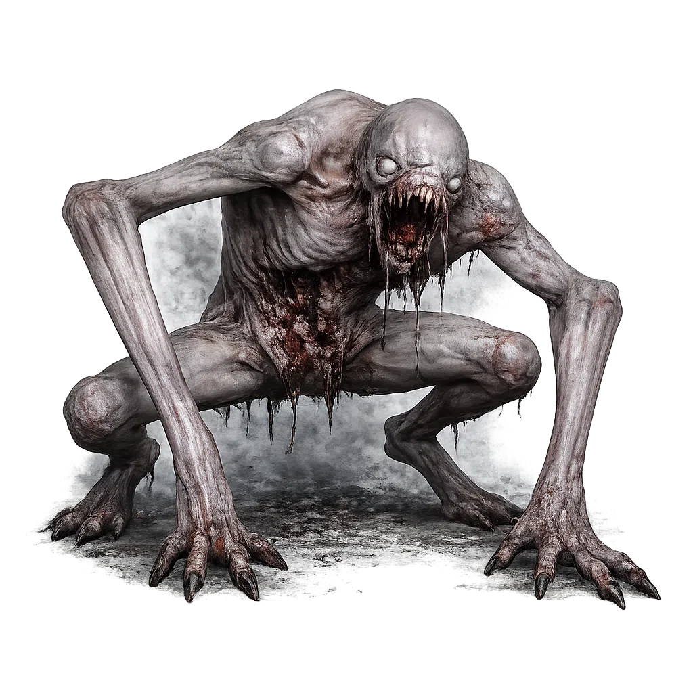
Gifts e eventos podem chamar inimigos, alternar horário, curar o player e criar momentos de tensão na live.
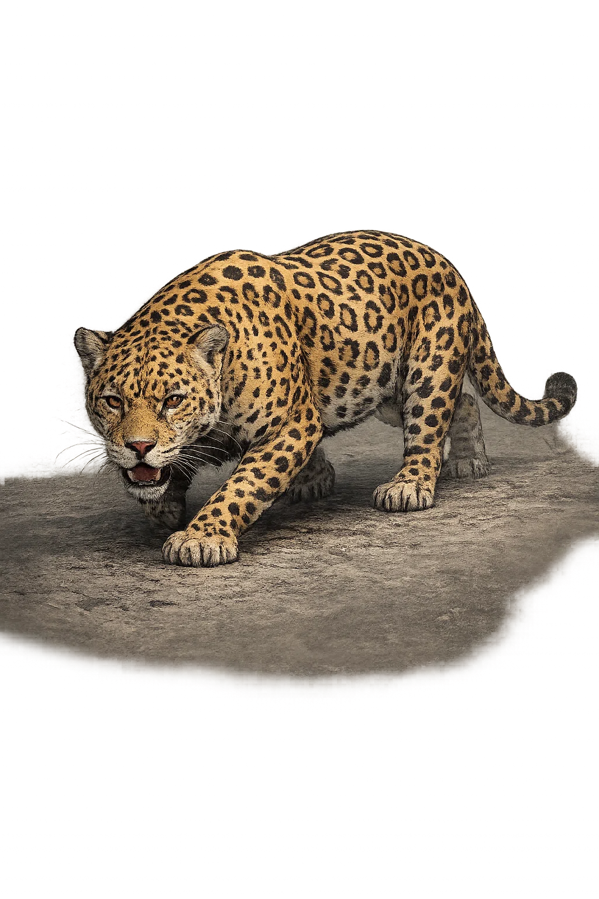
Eventos da live podem acionar animais e comandos de sobrevivência para criar tensão em tempo real.
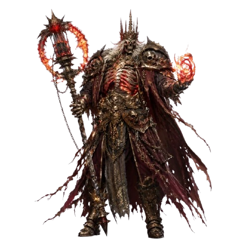
Eventos da live podem invocar bosses, criaturas e raids em tempo real.
Transforme o personagem e crie momentos engraçados durante a escalada.
O público pode causar caos, desafios, explosões, mobs, mutantes e efeitos em tempo real durante a gameplay.


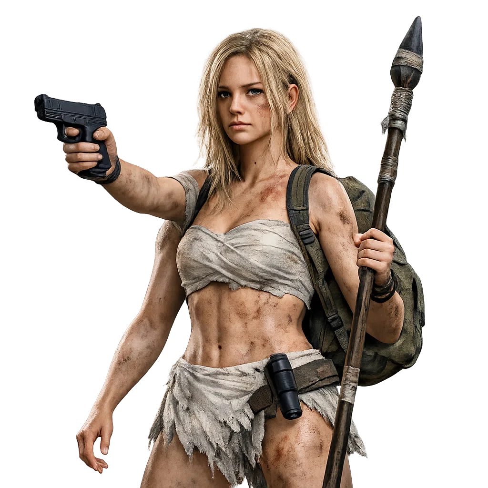
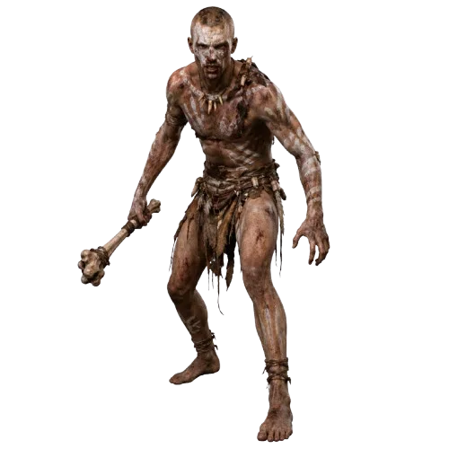
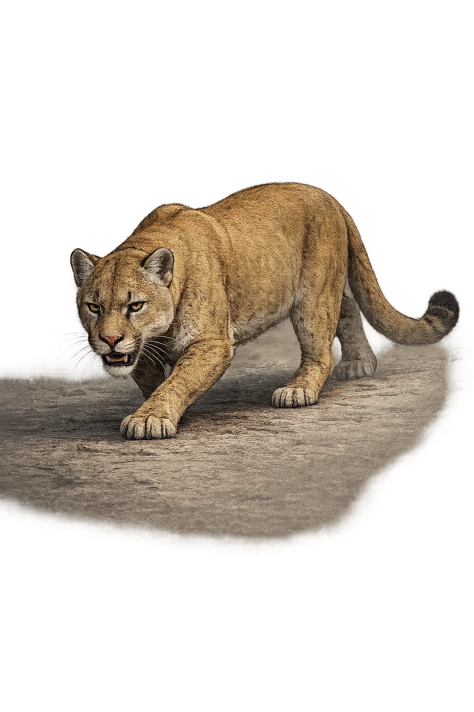
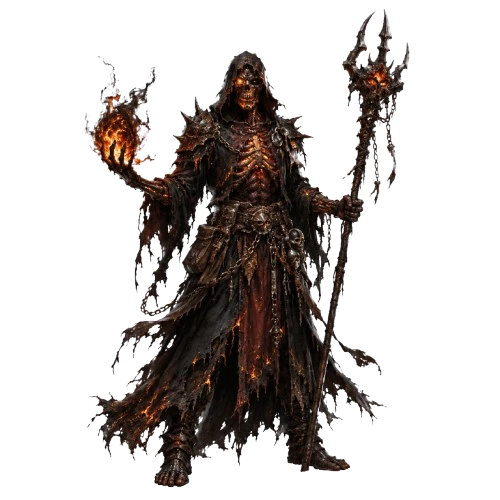
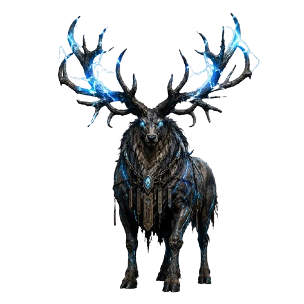
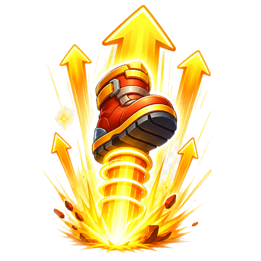
O LivePlay ainda está em fase de testes privados. Download e assinatura serão liberados em breve.
O download público será liberado em breve após os testes finais.
A assinatura PRO será liberada em breve após a fase de testes.
Resumo dos limites e recursos que aparecem na tela de Planos do app.
| Recurso | FREE | PRO |
|---|---|---|
| Presets ativos por jogo — Minecraft | 13 | 60 |
| Presets ativos por jogo — Grand Theft Auto V Legacy | 8 | 60 |
| Presets ativos por jogo — Sons Of The Forest | 8 | 60 |
| Presets ativos por jogo — Green Hell | 8 | 60 |
| Presets ativos por jogo — Valheim | 10 | 60 |
| Presets ativos por jogo — Only Climb | 6 | 60 |
| Conjuntos de modelos | Até 3 conjuntos | Até 20 conjuntos |
| Vídeos / Animações | 3 | 20 |
| Metas da live | 1 | 7 |
| Servidores Minecraft | 1 | 4 |
| Perfis salvos | 1 | 2 |
| Eventos recentes | Sim | Sim |
| Ranks da live | Sim | Sim |
| Rank mensal | Não | Sim |
| Tempo da Live | Sim | Sim |
| Jarro da Live | Não | Sim |
| Desafios | Não | Sim |
| Spotify | Não | Sim |
| Sistema de pontos | Não | Sim |
| Roleta | Não | Sim |
| Chat no jogo Minecraft | Sim | Sim |
| Chat com voz automática | Não | Sim |
| Plugins premium Minecraft | Não | Sim |
| Alertas padrão | Sim | Sim |
| Editor avançado dos Alertas | Não | Sim |
| Páginas nos Alertas | Não | Sim |
Sim. O LivePlay gera links de overlay para usar como fonte de navegador no OBS.
Sim. Você pode usar os overlays como fonte de navegador também no TikTok Live Studio.
Sim. O LivePlay possui integração com Sons Of The Forest via mod local/BepInEx para enviar comandos e presets do jogo.
Sim. O LivePlay possui integração com Green Hell via mod local/BepInEx para enviar comandos e presets do jogo.
Sim. O LivePlay possui integração com Only Climb Better Together via mod local/UE4SS para enviar comandos e presets do jogo.
Bedrock Box, Border e Surto Solar são FREE. Survival e Treasure Arena/Tesouro são PRO. Quando existe versão 1.21 e 1.20.1, a descrição é única porque as duas versões têm a mesma função.
Sim. O plano FREE libera recursos básicos para começar.
Sim. O instalador possui atualização automática para receber novas versões.
Sim, usando sua conta LivePlay e backup na nuvem. A conta possui controle de sessão para segurança.
Não. O app tem modelos, presets, backups e configuração guiada para acelerar o primeiro uso.
A assinatura PRO ainda está em fase de preparação e será liberada em breve.
Instale no Windows, faça login e conecte sua live TikTok. O download e a assinatura PRO serão liberados em breve.
A assinatura PRO ainda não está disponível pelo site. Ela será liberada em breve.
Abrir checkout manualmente O checkout será ativado somente quando a assinatura pública for liberada. OBS Studio
OBS Studio TikTok Live Studio
TikTok Live Studio Windows
Windows Mais jogos em breve
Mais jogos em breve